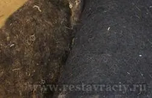
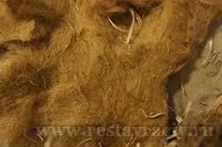
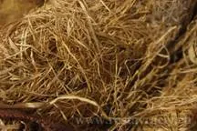
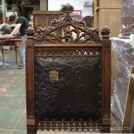
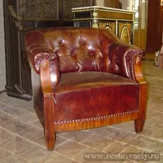
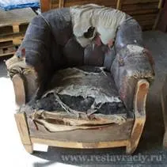
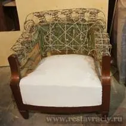
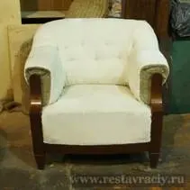

Работы и техники
Реставрация обивки
Под лицевой тканью старинного кресла могут сохраниться пружины, ремни и старый наполнитель. Сначала изучаем устройство сиденья, затем решаем, какие слои можно вернуть на место.


О чём рассказывает мастерская
- Набивка старого дивана
- Реставрация кожаной обивки
В материале мастерской
Фотографии и детали



Открыть снимок у мастерской


Открыть снимок у мастерской


Открыть снимок у мастерской


Открыть снимок у мастерской


Открыть снимок у мастерской


Открыть снимок у мастерской


Открыть снимок у мастерской
Есть похожая вещь?
Подберите ракурсы для предварительной оценки.